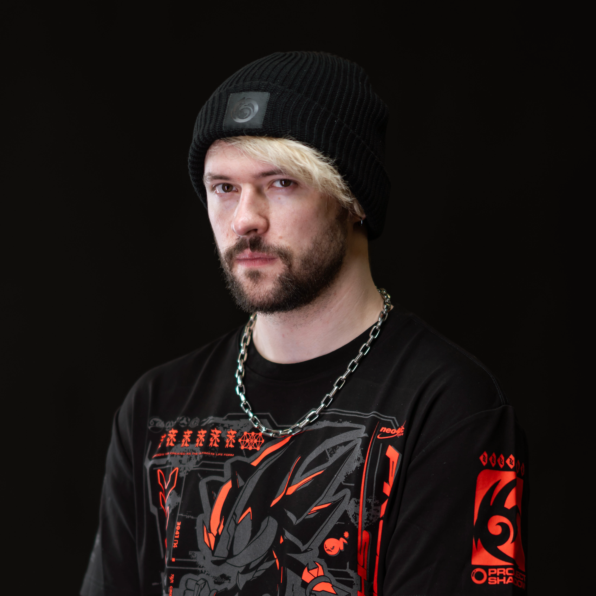
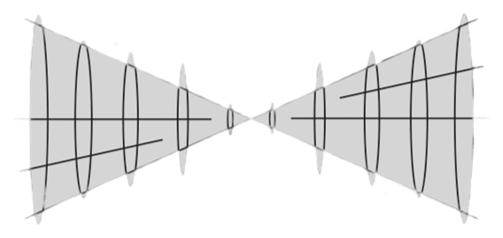
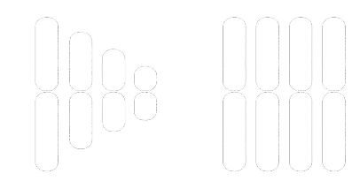
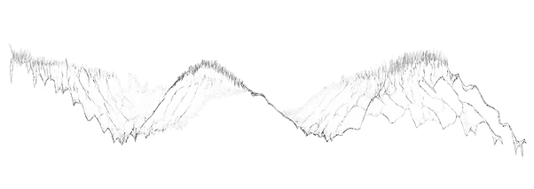

FUSION
real time resynthesis


"Eliminate and I used this all over our collab! Great tool to add some spicy weirdness to anything."

WHAT IS RESYNTHESIS IN FUSION?
Resynthesis in FUSION means rebuilding your sound in real time using a custom pitch tracker and spectral processing, letting you morph from 0% dry signal to 100% full resynthesis with a single slider.
WHAT IS EMPHASIS IN FUSION?
Emphasis in FUSION shapes the harmonic character of the resynthesized sound by boosting or sculpting specific harmonic regions, with five distinct modes ranging from aggressive "Double Square" to smooth "Double Circle."

WHAT IS SPLIT IN FUSION?
Split in FUSION lets you isolate and morph between odd -100 and even +100 harmonics of the resynthesized sound, giving you unique control over its tonal texture and character.
WHAT IS SHIFT IN FUSION?
Shift in FUSION applies a formant shifter to the resynthesized signal, allowing you to morph the perceived vocal or tonal character without changing its pitch, from deep and growly -100 to thin and airy +100.

WHAT IS COMP IN FUSION?
Comp in FUSION applies fixed-value spectral compression from 0 to 100 to even out the harmonic balance of the resynthesized signal, making it tighter and more focused without losing dynamics.
WHAT IS F-BOOST IN FUSION?
F-Boost (Fundamental Boost) in FUSION enhances the detected fundamental frequency by up to +12 dB, adding more weight, clarity, and low end punch to the resynthesized signal.

WHAT IS COLOR IN FUSION?
Color in FUSION is a bass autotune engine that pitch corrects the resynthesized fundamental in real time, with ±48 semitone control and scale snapping to Minor or Major for musical tuning.
WHAT IS ROOT IN FUSION?
Root in FUSION isolates and lets you listen to only the detected fundamental frequency, with a slider from 0 to 100, perfect for precise tracking and creative sound design, especially when combined with the Bass Autotune engine.
WHAT IS RANGE IN FUSION?
Range in FUSION switches the pitch tracker between Bass and Melody modes, optimizing detection for low-end or mid/high-frequency material depending on your sound source.

FOR WHAT IS THE WAVEFORM ANALYZER?
The Waveform Analyzer in FUSION gives you a real-time visual of your processed sound, helping you understand how the resynthesis, pitch tracking, and shaping tools are affecting the waveform.

SPECIAL FEATURES

SCALE THE WINDOW
FUSION's interface is fully scalable, just drag any corner to resize the plugin window to suit your workflow and screen resolution.